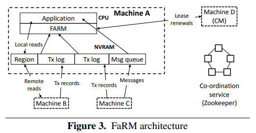
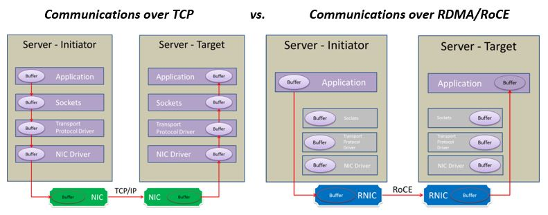

FaRM
FaRM: Distributed Transactions With Consistency, Availability, and Performance
Design of new transaction, replication, and recovery protocols from first principles to leverage commodity networks with RDMA and a new, inexpensive approach to providing non-volatile DRAM.
Overview
- FaRM provides distributed ACID transactions with strict serializability, high availability, high throughput and low latency
- FaRM uses optimistic concurrency control with a four phase commit protocol (lock, validation, commit backup, and commit primary)

NVRAM
- FaRM writes go to RAM, not disk -- eliminates a huge bottleneck
- RAM write takes 200 ns, hard drive write takes 10 ms, SSD write 100 us, ns = nanosecond, ms = millisecond, us = microsecond
- RAM is normally volatile so NV achieved by attaching batteries to power supply units and writing the contents of DRAM to SSD when the power fails.
- What if crash prevents s/w from writing SSD?
- FaRM copes with single-machine crashes by copying data from RAM of machines' replicas to other machines to ensure always f+1 copies

FaRM uses two networking ideas:
- Kernel bypass
- RDMA
Kernel bypass
- [diagram: FaRM user program, CPU cores, DMA queues, NIC]
- application directly interacts with NIC -- no system calls, no kernel
- NIC DMAs into/out of user RAM
- FaRM s/w polls DMA areas to check for new messages
- CPU operations is what limits RPC (100,000 bits/), not wire between machines (10 gb/s)
RDMA
- [src host, NIC, switch, NIC, target memory, target CPU]
- remote NIC directly reads/writes memory
- Sender provides memory address
- Remote CPU is not involved!
- This is "one-sided RDMA"
- Reads an entire cache line, atomically
Distributed transactions and replication
FaRM uses fewer messages than traditional protocols, and exploits one-sided RDMA reads and writes for CPU efficiency and low latency. FaRM uses primary-backup replication in non-volatile DRAM for both data and transaction logs, and uses unreplicated transaction coordinators that communicate directly with primaries and backups. FaRM uses optimistic concurrency control with read validation.
- Transactions use one-sided RDMA to read objects and they buffer writes locally.
- The coordinator also records the addresses and versions of all objects accessed
- At the end of the execution, FaRM attempts to commit the transaction by executing the following steps:
- Lock
- TC writes a LOCK record to the log on each machine that is a primary for any written object, containing versions and new values of all written objects on that primary as well as the list of all regions with written objects.
- Primaries attempt to lock the objects at the specified versions using compare-and-swap. Locking can fail if :
1. Any object version changed since it was read by the transaction.
2. If the object is currently locked by another transaction.
3. In this case, the coordinator aborts the transaction. It writes an abort record to all primaries and returns an error to the application.
- Validate
- TC performs read validation by reading, from their primaries, the versions of all objects that were read but not written by the transaction.
- If any object has changed, validation fails and the transaction is aborted.
- Validation uses one-sided RDMA reads by default. For primaries that hold more than objects, validation is done over RPC. The threshold (currently 4) reflects the CPU cost of an RPC relative to an RDMA read.
- Commit backups
- TC writes a COMMITBACKUP record to the non-volatile logs at each backup and waits for an ack from the NIC hardware.
- Commit primaries
- TC writes a COMMITPRIMARY record to the logs at each primary.
- Primaries process these records by updating the objects in place, incrementing their versions, and unlocking them, which exposes the writes committed by the transaction.
How does FaRM differ from Spanner?
- both replicate and use two-phase commit (2pc) for transactions
- Spanner:
- a deployed system
- focuses on geographic replication
- e.g. copies on East and West coasts, in case data centers fail
- is most innovative for read-only transactions -- TrueTime
- performance: r/w xaction takes 10 to 100 ms (Tables 3 and 6)
- FaRM
- a research prototype, to explore potential of RDMA
- all replicas are in same data center (wouldn't make sense otherwise)
- RDMA restricts design options: thus Optimistic Concurrency Control (OCC)
- performance: 58 microseconds for simple transactions (6.3, Figure 7)
- i.e. 100 times faster than Spanner
- performance: throughput of 100 million/second on 90 machines (Figure 7)
- extremely impressive, particularly for transactions+replication
- They target different bottlenecks:
- Spanner: speed of light and network delays
- FaRM: CPU time on servers